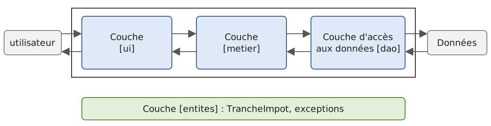
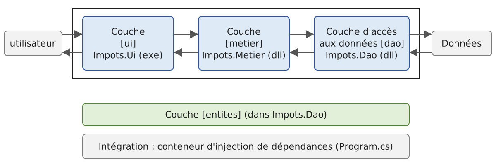
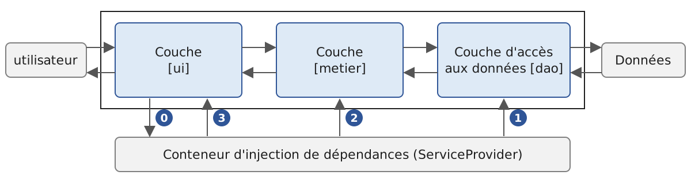

6. Architectures en couches
6.1. Introduction
Revenons sur la dernière version de l'application de calcul de l'impôt (version 3, chapitre précédent). Réduit à l'essentiel, son programme console avait la structure suivante :
Ce programme mêle trois traitements que l'on retrouve dans la plupart des applications :
- la récupération de données mémorisées dans des fichiers, des bases de données, etc. : lignes 1-14 ;
- le dialogue avec l'utilisateur : lignes 19-20 (saisies) et 23 (affichages) ;
- l'utilisation d'un algorithme métier, le calcul de l'impôt : ligne 23. Ce calcul était fait par la classe [AbstractImpot], mère de [FileImpot] et de [JsonImpot] : dans la version 3, la lecture des données et le calcul sont encore réunis dans un même objet.
La pratique a montré qu'isoler ces différents traitements dans des classes séparées améliore la maintenabilité des applications. L'architecture d'une application ainsi structurée est la suivante :

On appelle cette architecture « architecture trois tiers », traduction de l'anglais « three-tier architecture ». Le terme « tiers » désigne normalement une partie de l'application qui s'exécute sur une machine différente. Lorsque les parties sont sur une même machine, on parle plutôt d'architecture en couches (« layered architecture ») :
- la couche [metier] contient les règles métier de l'application. Pour notre application, ce sont les règles qui permettent de calculer l'impôt d'un contribuable. Cette couche a besoin de données pour travailler :
- les tranches d'impôt, des données qui changent chaque année ;
- le nombre d'enfants, le statut marital et le salaire annuel du contribuable ;
- la couche d'accès aux données ou [dao] (DAO = Data Access Object) fournit les données déjà enregistrées dans des fichiers ou des bases de données. C'est le cas ici des tranches d'impôt, comme dans la version 3 de l'application ;
- la couche d'interface avec l'utilisateur ou [ui] (UI = User Interface) fournit les données saisies par l'utilisateur et lui affiche les résultats. C'est le cas ici du nombre d'enfants, du statut marital et du salaire annuel du contribuable.
De façon générale :
- la couche [dao] s'occupe de l'accès aux données persistantes (fichiers, bases de données) ou non persistantes (réseau, capteurs, etc.) ;
- la couche [ui] s'occupe des interactions avec l'utilisateur, s'il y en a un ;
- les trois couches sont rendues indépendantes les unes des autres grâce à l'utilisation d'interfaces.
Nous allons reprendre l'application [Impots] déjà étudiée à plusieurs reprises pour lui donner une architecture en couches. Auparavant, il nous faut définir les interfaces des différentes couches de l'application.
6.2. Les interfaces de l'application [Impots]
Rappelons qu'une interface définit un ensemble de signatures de méthodes et de propriétés. Les classes qui implémentent l'interface donnent un contenu à ces méthodes et propriétés.
Revenons à l'architecture en couches de notre application :
Dans ce type d'architecture, c'est souvent l'utilisateur qui prend les initiatives. Il fait une demande en [1] et reçoit une réponse en [8]. On appelle cela le cycle demande-réponse. Prenons l'exemple du calcul de l'impôt d'un contribuable. Celui-ci va nécessiter plusieurs étapes :
- la couche [ui] demande à l'utilisateur son statut marital, son nombre d'enfants et son salaire annuel. C'est l'opération [1] ci-dessus ;
- ceci fait, la couche [ui] demande à la couche [metier] de calculer l'impôt. Pour cela, elle lui transmet les données qu'elle a reçues de l'utilisateur. C'est l'opération [2] ;
- la couche [metier] a besoin de certaines informations pour mener à bien son travail : les tranches d'impôt. Elle les demande à la couche [dao] par le chemin [3, 4, 5, 6] : [3] est la demande initiale et [6] la réponse à cette demande ;
- ayant toutes les données dont elle avait besoin, la couche [metier] calcule l'impôt ;
- la couche [metier] peut maintenant répondre à la demande faite par la couche [ui] en [2]. C'est le chemin [7] ;
- la couche [ui] met en forme ce résultat puis le présente à l'utilisateur. C'est le chemin [8] ;
- on pourrait imaginer que l'utilisateur fasse des simulations d'impôt et qu'il veuille les mémoriser. Il utiliserait le même chemin [1-8] pour le faire.
On voit dans cette description qu'une couche utilise les ressources de la couche qui est à sa droite, jamais celles de la couche qui est à sa gauche. Considérons deux couches contiguës :

La couche [A] fait des demandes à la couche [B]. Dans les cas les plus simples, une couche est implémentée par une unique classe. Mais une application évolue au cours du temps, et la couche [B] peut avoir successivement des classes d'implémentation différentes [B1], [B2], etc. Si la couche [B] est la couche [dao], elle peut avoir une première implémentation [B1] qui va chercher les données dans un fichier. Quelques années plus tard, on peut vouloir mettre ces données dans une base de données : on construit alors une seconde classe d'implémentation [B2]. Si, dans l'application initiale, la couche [A] travaillait directement avec la classe [B1], on est obligé de réécrire en partie le code de la couche [A]. Supposons par exemple qu'on ait écrit dans la couche [A] quelque chose comme :
- ligne 1 : une instance de la classe [B1] est créée ;
- ligne 3 : des données sont demandées à cette instance.
Si la nouvelle classe d'implémentation [B2] a des méthodes de même signature que la classe [B1], il faudra changer tous les [B1] en [B2]. C'est le cas le plus favorable, et il est assez improbable si on n'a pas prêté attention à ces signatures. Dans la pratique, il est fréquent que les classes [B1] et [B2] n'aient pas les mêmes signatures de méthodes, et donc qu'une bonne partie de la couche [A] doive être réécrite.
On améliore les choses en plaçant une interface entre les couches [A] et [B]. On fige ainsi dans une interface les signatures des méthodes que la couche [B] présente à la couche [A]. Le schéma précédent devient le suivant :

La couche [A] ne s'adresse plus directement à la couche [B] mais à son interface [IB]. Dans le code de la couche [A], la classe d'implémentation [Bi] de la couche [B] n'apparaît plus qu'une fois, au moment de la création de l'objet qui implémente l'interface [IB]. Ensuite, c'est l'interface [IB] et non sa classe d'implémentation qui est utilisée. Le code précédent devient :
- ligne 1 : une instance [ib] implémentant l'interface [IB] est créée par instanciation de la classe [B1] ;
- ligne 3 : des données sont demandées à l'instance [ib].
Désormais, si on remplace l'implémentation [B1] de la couche [B] par une implémentation [B2] et que ces deux implémentations respectent la même interface [IB], seule la ligne 1 de la couche [A] doit être modifiée. C'est un grand avantage qui, à lui seul, justifie l'usage systématique d'interfaces entre deux couches.
On peut aller encore plus loin et rendre la couche [A] totalement indépendante de la couche [B]. Dans le code ci-dessus, la ligne 1 pose problème parce qu'elle nomme en dur la classe [B1]. L'idéal serait que la couche [A] reçoive une implémentation de l'interface [IB] sans avoir à nommer de classe. Ce serait cohérent avec le schéma ci-dessus : la couche [A] s'adresse à l'interface [IB], et on ne voit pas pourquoi elle aurait besoin de connaître le nom de la classe qui implémente cette interface.
C'est ce que permet l'injection de dépendances (Dependency Injection, DI). L'architecture précédente évolue de la façon suivante :

Un composant transversal, le conteneur d'injection de dépendances, crée les objets qui implémentent les couches et les relie entre eux : il passe à la couche [A] une référence sur l'objet qui implémente la couche [B]. Le code de la couche [A] prend alors la forme suivante :
- ligne 2 : la couche [A] reçoit par son constructeur une instance [ib] qui implémente l'interface [IB]. Ce n'est pas la couche [A] qui la crée mais le conteneur ;
- ligne 7 : des données sont demandées à l'instance [ib].
La classe d'implémentation [B1] n'apparaît plus nulle part dans le code de la couche [A]. Lorsque l'implémentation [B1] sera remplacée par une nouvelle implémentation [B2], rien ne changera dans le code de la couche [A] : seul changera l'endroit, unique dans l'application, où l'on indique au conteneur quelle classe implémente [IB]. Cet endroit peut même lire le nom de l'implémentation à utiliser dans un fichier de configuration.
Le cours de 2008 utilisait pour cela le framework Spring.NET et un fichier de configuration XML [App.config]. Spring.NET n'est plus maintenu ; .NET fournit aujourd'hui son propre conteneur, [Microsoft.Extensions.DependencyInjection], utilisé par toutes les applications ASP.NET Core. C'est lui que nous utiliserons dans la version 5 de l'application. Le couple « interfaces C# + injection de dépendances » apporte une amélioration décisive à la maintenance des applications en rendant leurs couches étanches entre elles.
Revenons à l'architecture en couches de notre application. Dans les cas simples, on peut partir de la couche [metier] pour découvrir les interfaces de l'application. Pour travailler, elle a besoin de données :
- déjà disponibles dans des fichiers, des bases de données ou via le réseau. Elles sont fournies par la couche [dao] ;
- pas encore disponibles. Elles sont alors fournies par la couche [ui], qui les obtient auprès de l'utilisateur.
Quelle interface la couche [dao] doit-elle offrir à la couche [metier] ? La couche [dao] doit fournir à la couche [metier] les tranches d'impôt. Dans notre application, la couche [dao] exploite des données existantes mais n'en crée pas de nouvelles. Son interface peut être la suivante :
- ligne 3 : la couche [dao] est placée dans l'espace de noms [Dao]. Nous utilisons les espaces de noms de portée fichier (C# 10) : la déclaration [namespace Dao;] s'applique à tout le fichier, sans accolades ni niveau d'indentation supplémentaire ;
- ligne 9 : l'interface [IImpotDao] définit la propriété en lecture seule [TranchesImpot], qui fournit les tranches d'impôt à la couche [metier] ;
- ligne 1 : importe l'espace de noms dans lequel est défini le type [TrancheImpot] :
Comme dans les versions 2 et 3, une tranche d'impôt est représentée par un [readonly record struct] (C# 10) : une structure non modifiable dont le compilateur génère le constructeur (à partir des paramètres placés après le nom du type), les propriétés [Limite], [CoeffR] et [CoeffN] en lecture seule, l'égalité par valeur et la méthode [ToString]. On écrit [new TrancheImpot(4962M, 0M, 0M)] pour créer une tranche. Le cours de 2008 utilisait une structure aux propriétés modifiables ; nous verrons que l'impossibilité de modifier une tranche supprime un effet de bord de l'ancienne couche [metier].
Quelle interface la couche [metier] doit-elle présenter à la couche [ui] ? Rappelons les interactions entre ces deux couches :
- la couche [ui] demande à l'utilisateur son statut marital, son nombre d'enfants et son salaire annuel. C'est l'opération [1] du schéma ;
- ceci fait, la couche [ui] demande à la couche [metier] de calculer l'impôt. Pour cela, elle lui transmet les données qu'elle a reçues de l'utilisateur. C'est l'opération [2].
L'interface de la couche [metier] peut être la suivante :
- ligne 1 : tout ce qui concerne la couche [metier] est placé dans l'espace de noms [Metier] ;
- ligne 6 : l'interface [IImpotMetier] ne définit qu'une méthode, celle qui calcule l'impôt d'un contribuable à partir de son statut marital, de son nombre d'enfants et de son salaire annuel.
Nous étudions maintenant une première implémentation de cette architecture en couches.
6.3. Application exemple - version 4
6.3.1. Le projet
La version 4 est un unique projet console, créé par :
Chaque couche y occupe un dossier :
- le dossier [Entites] contient les types transversaux aux couches [ui], [metier] et [dao] : la structure [TrancheImpot] et l'exception [ImpotException], reprises de la version 3 ;
- le dossier [Dao] contient l'interface et les classes de la couche [dao]. Nous utiliserons deux implémentations de l'interface [IImpotDao] : la classe [HardwiredImpot], dont les données sont écrites dans le code (version 2), et la classe [FileImpot], qui lit les données dans un fichier texte (version 3). La lecture d'un fichier JSON, l'autre possibilité de la version 3, sera reprise dans la version 5 ;
- le dossier [Metier] contient l'interface et la classe de la couche [metier] ;
- le dossier [Ui] contient la classe de la couche [ui] ;
- le fichier [Program.cs] crée les couches et les relie entre elles ;
- le fichier [DataImpot.txt] contient les tranches d'impôt lues par l'implémentation [FileImpot] de la couche [dao].
Le nom des dossiers n'a aucune importance pour le compilateur : tous les fichiers [.cs] du dossier du projet et de ses sous-dossiers sont compilés. C'est une convention qui facilite la lecture du projet ; on la complète en donnant à l'espace de noms le nom du dossier.
Le fichier [ImpotsV4.csproj] est celui généré par [dotnet new], complété d'une instruction de copie des fichiers de données :
- ligne 12 : les fichiers [DataImpot*.txt] sont recopiés à côté de l'exécutable lors de la compilation, dans le dossier [bin/Debug/net10.0]. La couche [dao] les cherche à cet endroit, qu'on lance le programme par [dotnet run] depuis le dossier du projet ou directement depuis un autre dossier.
6.3.2. Les entités de l'application

Nous appelons entités les types transversaux aux couches. Ce sont en général les classes et structures qui encapsulent les données de la couche [dao]. Ces entités remontent en général jusqu'à la couche [ui]. Les entités de l'application sont la structure [TrancheImpot], déjà présentée, et l'exception [ImpotException] de la version 3, accompagnée de l'énumération de ses codes d'erreur :
- lignes 4-5 : les codes d'erreur. L'attribut [Flags] indique que les valeurs de l'énumération sont des bits qu'on peut combiner avec l'opérateur [|] : la valeur [CodeErreur.Champ2 | CodeErreur.Champ3] (8 + 16 = 24) signifie que les champs 2 et 3 d'une ligne sont incorrects. La méthode [ToString] d'une telle énumération affiche alors « Champ2, Champ3 ». La valeur [Json] de la version 3 a disparu, puisque cette version ne lit pas de fichier JSON ;
- ligne 8 : une exception propre à l'application dérive de la classe [Exception] ;
- ligne 11 : le code d'erreur, un entier qui combine des valeurs [CodeErreur], est une propriété [init] (C# 9) : on ne peut lui donner une valeur qu'à la création de l'objet, par exemple avec un initialiseur [new ImpotException(...) { Code = ... }] ;
- lignes 14-15 : deux constructeurs, l'un avec un message, l'autre avec un message et l'exception d'origine, qui sera accessible par la propriété [InnerException]. Ils se contentent d'appeler le constructeur correspondant de la classe parent [Exception] ([: base(...)]).
Dans cette version, seule la classe [FileImpot] de la couche [dao] lance des [ImpotException].
6.3.3. La couche [dao]
Rappelons l'interface de la couche [dao] :
Nous implémentons cette interface de deux façons différentes. Tout d'abord avec la classe [HardwiredImpot] :
- ligne 6 : la classe [HardwiredImpot] implémente l'interface [IImpotDao] ;
- ligne 9 : implémentation de la propriété [TranchesImpot] de l'interface. C'est une propriété automatique en lecture seule, initialisée par un initialiseur de propriété (C# 6) ;
- lignes 11-17 : la valeur initiale est une expression de collection (C# 12) : la liste des éléments entre crochets crée ici un tableau [TrancheImpot[]]. Chaque élément est créé par [new(...)] : le type de l'objet créé n'est pas répété, il est déduit du type attendu, [TrancheImpot] (C# 9).
L'interface [IImpotDao] est également implémentée par la classe [FileImpot], qui lit les tranches d'impôt dans un fichier texte. Le fichier [DataImpot.txt] est le suivant :
Chaque ligne décrit une tranche sous la forme [limite:coeffR:coeffN]. Les nombres sont écrits avec un point décimal, quelle que soit la langue du système : le fichier est ainsi lisible sur toutes les machines. Les valeurs sont celles du barème 2004 sur les revenus 2003, conservées telles quelles : il s'agit d'un exercice. La classe [FileImpot] est la suivante :
- ligne 3 : la directive [using static] (C# 6) permet d'utiliser les membres statiques et les types imbriqués d'un type sans préfixe. Les valeurs d'une énumération sont des constantes, donc des membres statiques : on écrit [Champ1] au lieu de [CodeErreur.Champ1] ;
- ligne 9 : la classe [FileImpot] implémente l'interface [IImpotDao] ;
- ligne 15 : la propriété de l'interface [IImpotDao]. Elle n'a pas de [set] : elle ne peut recevoir une valeur que dans le constructeur (ligne 75) ;
- ligne 18 : le constructeur reçoit le nom du fichier des tranches d'impôt ;
- ligne 23 : les tranches lues sont accumulées dans une liste, initialisée par une expression de collection vide ;
- ligne 25 : le fichier est cherché dans le dossier de l'exécutable, [AppContext.BaseDirectory], là où le fichier [.csproj] l'a fait recopier. Si [fileName] est un chemin absolu, [Path.Combine] le rend tel quel ;
- lignes 29-31 : si le fichier n'existe pas, on lance une [FileNotFoundException] avec un message en français. Le message de l'exception que lancerait sinon .NET est en anglais (.NET n'a pas de messages en français) et il contient le chemin complet du fichier ;
- ligne 33 : [File.ReadLines] lit le fichier ligne par ligne : les lignes sont lues au fur et à mesure de la boucle [foreach], et le fichier est fermé à la fin de celle-ci, y compris si une exception est lancée ;
- ligne 43 : la ligne est découpée sur le caractère deux-points ; l'option [StringSplitOptions.TrimEntries] supprime les espaces autour de chaque champ ;
- lignes 46-48 : une ligne qui n'a pas trois champs est incorrecte ;
- lignes 53-55 : conversion des trois champs. Chaque champ incorrect ajoute son bit au code d'erreur avec l'opérateur [|=] ;
- lignes 58-60 : une ligne incorrecte provoque une [ImpotException] dont le message donne le numéro et le contenu de la ligne. Le code, de type [CodeErreur], est converti en entier par [(int)code] ;
- ligne 63 : la tranche lue est ajoutée à la liste ;
- ligne 66 : le filtre d'exception [when] (C# 6) n'intercepte que les erreurs d'entrée-sortie : [IOException], dont dérive [FileNotFoundException], et [UnauthorizedAccessException] (droits insuffisants). Le motif [e is IOException or UnauthorizedAccessException] (C# 9) teste les deux types. La [ImpotException] lancée ligne 60 n'est pas interceptée : elle remonte telle quelle à l'appelant ;
- lignes 69-71 : l'erreur d'entrée-sortie est encapsulée dans une [ImpotException] de code [Acces] ; l'exception d'origine est conservée dans sa propriété [InnerException] ;
- ligne 75 : la liste est copiée dans un tableau. L'opérateur [..] (« spread ») d'une expression de collection insère tous les éléments d'une autre collection ;
- lignes 79-80 : la conversion d'un champ en [decimal]. Le style [NumberStyles.AllowDecimalPoint] n'accepte que des chiffres et un point décimal, et la culture invariante [CultureInfo.InvariantCulture] impose le point comme séparateur décimal. Ainsi, « 0,191 » est refusé, alors que la culture fr-FR de l'utilisateur l'aurait accepté. La méthode est écrite avec un corps d'expression [=>] (C# 6).
6.3.4. La couche [metier]
Rappelons l'interface de cette couche :
Son implémentation [ImpotMetier] est la suivante :
- ligne 7 : la classe [ImpotMetier] implémente l'interface [IImpotMetier]. La couche [metier] doit collaborer avec la couche [dao] : elle reçoit donc une référence sur l'objet qui implémente l'interface [IImpotDao]. Cette référence est le paramètre [dao] du constructeur primaire de la classe (C# 12) : les paramètres placés après le nom de la classe sont ceux de son constructeur, et ils sont utilisables dans tout le corps de la classe ;
- ligne 10 : à la construction de l'objet, la couche [metier] demande une fois pour toutes les tranches d'impôt à la couche [dao] et les mémorise dans un champ en lecture seule. On remarquera que la couche [metier] ne connaît la couche [dao] que par son interface [IImpotDao] : elle ignore si les tranches viennent du code, d'un fichier ou, plus tard, d'une base de données ;
- lignes 16-17 : la couche [metier] ne fait pas confiance à ses appelants. Les méthodes statiques [ThrowIfNegative] (.NET 8) lancent une [ArgumentOutOfRangeException] si leur paramètre est négatif ; le message de l'exception contient le nom du paramètre ;
- lignes 19-22 : le nombre de parts. La division [nbEnfants / 2M] est une division décimale parce que [2M] est un [decimal] : 3 enfants donnent 1,5 part ;
- lignes 25-26 : le revenu imposable et le quotient familial ;
- lignes 29-35 : on cherche la première tranche dont la limite est supérieure ou égale au quotient familial. La dernière tranche, [tranches[^1]] (l'index [^1] désigne le dernier élément, C# 8), sert si aucune autre ne convient : sa limite (0) n'est pas utilisée ;
- ligne 39 : l'impôt, tronqué à sa partie entière.
Le cours de 2008 écrivait, avant la recherche de la tranche, [tranchesImpot[tranchesImpot.Length - 1].Limite = QF + 1] pour que la boucle de recherche s'arrête toujours. Cette instruction modifiait le tableau fourni par la couche [dao] : un effet de bord sur une donnée partagée par toutes les couches. On ne pourrait d'ailleurs plus l'écrire, puisqu'une [TrancheImpot] est désormais non modifiable. Le code moderne prend simplement la dernière tranche quand aucune limite ne convient, sans modifier les données qu'il reçoit.
6.3.5. La couche [ui]
Dans les versions 2 et 3, le dialogue avec l'utilisateur était écrit dans le programme principal, à la suite de la création de l'objet de calcul. Seule différait la façon de créer cet objet. Nous isolons maintenant ce dialogue dans une classe de la couche [ui], qui ne connaît la couche [metier] que par son interface :
- ligne 6 : la classe [Dialogue] est statique : elle n'a pas d'état propre et ne contient que des membres statiques ;
- lignes 9-14 : le message d'aide est un littéral de chaîne brut (C# 11), délimité par trois guillemets. Il peut s'étendre sur plusieurs lignes ; l'indentation commune des lignes, fixée par la position des guillemets fermants, est retirée ;
- ligne 17 : la méthode [Run] reçoit la couche [metier] sous la forme de son interface [IImpotMetier]. Elle ignore tout de la classe qui l'implémente et de la couche [dao] ;
- ligne 23 : [Console.ReadLine] rend [null] à la fin du flux d'entrée ; l'opérateur [?.] rend alors [null] sans appeler [Trim], et l'opérateur [??] remplace [null] par la chaîne vide : une fin de flux arrête le dialogue comme une ligne vide ;
- ligne 30 : la ligne saisie est découpée sur les espaces ; l'option [StringSplitOptions.RemoveEmptyEntries] ignore les espaces multiples ;
- lignes 44-50 : [int.TryParse(champs[1], out int nbEnfants)] déclare la variable de sortie dans l'appel lui-même (C# 7) ;
- ligne 56 : les paramètres sont corrects : le calcul est demandé à la couche [metier].
6.3.6. L'intégration des couches
Il reste à créer les couches et à les relier entre elles. C'est le rôle du programme principal [Program.cs] :
- ligne 8 : l'argument du programme choisit l'implémentation de la couche [dao] : [hardwired] pour la classe [HardwiredImpot], sinon le nom du fichier lu par la classe [FileImpot], [DataImpot.txt] par défaut. Rappelons qu'avec les instructions de haut niveau, les arguments de la ligne de commande sont dans le tableau [args] ;
- ligne 13 : création de la couche [dao]. C'est le seul endroit du programme où les classes [HardwiredImpot] et [FileImpot] sont nommées ;
- ligne 15 : création de la couche [metier], qui reçoit la couche [dao] ;
- lignes 17-22 : la création de la couche [dao] peut lancer une [ImpotException]. On affiche alors l'erreur, avec le message de l'exception d'origine s'il y en a une, et le programme s'arrête avec le code de sortie 1. Comme dans la version 3, le code est converti en [CodeErreur] pour être affiché en clair ;
- ligne 26 : les couches sont prêtes : la couche [ui] dialogue avec l'utilisateur.
6.3.7. Exécutions
Avec le fichier [DataImpot.txt] (implémentation [FileImpot]), et en testant la validation des saisies :
Avec l'implémentation [HardwiredImpot] :
Avec un fichier qui n'existe pas :
Le code d'erreur est [Acces], et le message de l'exception d'origine, la [FileNotFoundException], est affiché.
Avec le fichier [DataImpotInvalide.txt] suivant, dont la ligne 3 est écrite avec des virgules décimales :
on obtient :
Les champs 2 et 3 de la ligne 3 sont incorrects : le code d'erreur combine les bits [Champ2] et [Champ3], et la méthode [ToString] d'une énumération [Flags] l'affiche sous la forme « Champ2, Champ3 ».
6.3.8. Conclusion
L'architecture en couches et l'utilisation d'interfaces ont apporté une certaine souplesse à notre application. Elle apparaît dans la façon dont le programme principal crée les couches [dao] et [metier] :
Changer l'implémentation de la couche [dao] ne change que la ligne 1. Une fois les couches créées, le code de la couche [ui] est le même dans les deux cas : la couche [metier] y est manipulée au travers de son interface [IImpotMetier], et non au travers de sa classe d'implémentation.
La même souplesse apparaît dans la couche [metier] : elle est construite à partir d'une référence sur l'interface de la couche [dao]. Changer l'implémentation de cette dernière n'a donc aucun impact sur la couche [metier]. C'est pourquoi notre unique classe [ImpotMetier] a pu travailler sans modification avec deux implémentations différentes de la couche [dao].
6.4. Application exemple - version 5

Cette nouvelle version reprend la précédente en y apportant les modifications suivantes :
- les couches [dao] et [metier] sont chacune placées dans une bibliothèque de classes (une DLL) et testées avec le framework de tests unitaires MSTest ;
- la couche [dao] reçoit une troisième implémentation, [JsonImpot], qui lit les tranches d'impôt dans un fichier JSON ;
- l'intégration des couches est assurée par le conteneur d'injection de dépendances de .NET, et l'implémentation de la couche [dao] est choisie dans un fichier de configuration.
Dans les grands projets, plusieurs développeurs travaillent sur la même application. Les architectures en couches facilitent ce mode de travail : parce que les couches communiquent entre elles au travers d'interfaces bien définies, un développeur qui travaille sur une couche n'a pas à se préoccuper du travail des autres développeurs sur les autres couches. Il suffit que tout le monde respecte les interfaces.
Ainsi, le développeur de la couche [metier] a besoin, pour tester sa couche, d'une implémentation de la couche [dao]. Tant que celle-ci n'est pas terminée, il peut utiliser une implémentation factice de la couche [dao], pourvu qu'elle respecte l'interface [IImpotDao]. C'est là un autre avantage de l'architecture en couches : un retard dans la couche [dao] n'empêche pas de tester la couche [metier]. L'implémentation factice a aussi l'avantage d'être bien plus simple à mettre en œuvre que la véritable couche [dao], qui peut nécessiter un SGBD, des connexions réseau, etc.
Lorsque la couche [dao] est terminée et testée, elle est fournie aux développeurs de la couche [metier] sous la forme d'une bibliothèque (un projet ou une DLL) plutôt que de code source à recopier. Au final, l'application est livrée sous la forme d'un exécutable (celui de la couche [ui]) et de bibliothèques de classes (les autres couches).
6.4.1. La solution ImpotsV5
La version 5 est une solution formée de quatre projets : un par couche, plus un projet de tests unitaires. Elle se construit avec les commandes suivantes, tapées dans le dossier [ImpotsV5] :
- [dotnet new classlib] crée un projet de bibliothèque de classes : sa compilation produit une DLL et non un exécutable. Le modèle crée un fichier [Class1.cs] que nous supprimons ;
- [dotnet new mstest] crée un projet de tests MSTest, présenté plus loin ;
- [dotnet new sln --format slnx] crée le fichier de solution [ImpotsV5.slnx], au format XML introduit par le SDK de .NET 9 ; c'est le format par défaut de [dotnet new sln] depuis .NET 10, l'option [--format slnx] ne fait donc que le rendre explicite ; [dotnet sln add] y ajoute les projets ;
- [dotnet add reference] ajoute une référence de projet à projet : la couche [metier] utilise la couche [dao], la couche [ui] utilise les deux autres, de même que les tests.
On obtient l'arborescence suivante :
Le fichier de solution est le suivant :
La commande [dotnet build ImpotsV5.slnx] compile les quatre projets dans l'ordre imposé par leurs références : [Impots.Dao] d'abord, puis [Impots.Metier], puis [Impots.Ui] et [Impots.Tests].
6.4.2. La couche [dao]
Le projet [Impots.Dao] contient la couche [dao] et les entités de l'application. Son fichier de projet est le suivant :
- lignes 4-6 : les propriétés générées par [dotnet new classlib]. Il n'y a pas de balise [OutputType] : le projet produit une bibliothèque [Impots.Dao.dll] ;
- lignes 12-13 : les fichiers de données sont recopiés dans le dossier de compilation. Les fichiers ainsi marqués sont également recopiés dans le dossier de compilation de tout projet qui référence [Impots.Dao] : les projets [Impots.Ui] et [Impots.Tests] disposeront des fichiers de données sans avoir à les déclarer.
Les entités
La structure [TrancheImpot] et la classe [ImpotException] sont celles de la version 4. Seule l'énumération [CodeErreur] quitte le fichier de l'exception : [ImpotException] devient ainsi commune à toutes les implémentations de la couche [dao], sans être liée aux codes de l'une d'elles :
- ligne 7 : le code d'erreur reste un simple entier : chaque implémentation de la couche [dao] définit ses propres codes.
L'implémentation [FileImpot]
L'interface [IImpotDao] et la classe [HardwiredImpot] sont celles de la version 4. La classe [FileImpot] ne change que par l'emplacement de ses codes d'erreur :
- lignes 11-12 : les codes d'erreur, auparavant dans l'énumération [CodeErreur] de l'espace de noms [Entites], ont migré dans la classe [FileImpot], sous la forme d'une énumération imbriquée [CodeErreurs] : ce sont en effet des codes propres à cette implémentation de l'interface [IImpotDao] ([JsonImpot] a les siens). Ils s'écrivent [CodeErreurs.Champ1] dans la classe et [FileImpot.CodeErreurs.Champ1] à l'extérieur. La directive [using static] de la version 4 devient inutile.
Plus loin dans le constructeur :
- lignes 63, 72 : les erreurs sont encapsulées dans une [ImpotException]. Le code d'erreur, de type [CodeErreurs], est converti en entier par [(int)code].
L'implémentation [JsonImpot]
Le chapitre précédent a montré comment lire des données au format JSON avec [System.Text.Json]. La troisième implémentation de la couche [dao] lit les tranches d'impôt dans le fichier [DataImpot.json] suivant :
La classe [JsonImpot] est la suivante :
- ligne 11 : les codes d'erreur de cette implémentation : erreur d'accès au fichier ou contenu incorrect ;
- lignes 27-31 : le fichier est lu en entier dans une chaîne, avec la même gestion des erreurs d'entrée-sortie que dans [FileImpot] ;
- ligne 43 : la chaîne JSON est transformée en tableau [TrancheImpot[]]. Le deuxième paramètre, [TranchesJsonContext.Default.TrancheImpotArray], fournit le code de désérialisation de ce type ;
- ligne 44 : [Deserialize] rend [null] si le fichier contient le littéral JSON [null] ; l'expression [?? throw] (C# 7) lance alors une exception ;
- lignes 46-50 : un fichier qui n'est pas un tableau JSON de tranches provoque une [JsonException], encapsulée dans une [ImpotException] de code [Format] ;
- lignes 58-60 : sans paramètre de ce type, [JsonSerializer] découvre les propriétés de [TrancheImpot] à l'exécution, par réflexion. Ici, l'attribut [JsonSerializable] demande au compilateur de générer, dans la classe partielle [TranchesJsonContext], le code de (dé)sérialisation du type [TrancheImpot[]]. Ce code est plus rapide et il fonctionne aussi dans les applications compilées en code natif (AOT), où la réflexion est désactivée, ce qui est le cas par défaut des applications fichier unique de .NET 10 que nous allons utiliser. L'option [JsonSerializerDefaults.Web] fait correspondre les noms JSON en camelCase ([limite]) aux propriétés C# ([Limite]). On remarquera que [System.Text.Json] sait construire un [record struct] positionnel en appelant son constructeur.
Un programme d'essai
Avant d'écrire des tests automatisés, faisons un premier essai visuel de la couche [dao]. .NET 10 permet à une application fichier unique de référencer un projet par la directive [#:project]. Le programme [Essais/essai-dao.cs] affiche les tranches fournies par les trois implémentations :
- ligne 1 : le programme utilise le projet [Impots.Dao]. Celui-ci est compilé avec le programme, et ses fichiers de données sont recopiés à côté de l'exécutable du programme d'essai. Attention : si on modifie ensuite le projet référencé sans modifier le programme, [dotnet run essai-dao.cs] peut réutiliser l'exécutable déjà construit ; l'option [--no-cache] force alors une nouvelle compilation ;
- ligne 8 : un tableau des trois implémentations de l'interface [IImpotDao] ;
- ligne 11 : [GetType] rend le type réel de l'objet, dont [Name] est le nom de la classe ;
- lignes 18-22 : gestion d'une éventuelle [ImpotException].
Résultats :
Les trois implémentations fournissent les mêmes tranches. L'affichage des nombres [decimal] suit la culture fr-FR de l'utilisateur : virgule décimale.
6.4.3. La couche [metier]
Le fichier de projet [Impots.Metier.csproj] est le suivant :
- ligne 11 : la référence au projet [Impots.Dao] ajoutée par [dotnet add reference]. Le cours de 2008 faisait référencer la DLL compilée de la couche [dao], qu'il fallait aller chercher dans un dossier [bin] ; une référence de projet à projet compile [Impots.Dao] avant [Impots.Metier] et utilise toujours sa dernière version.
L'interface [IImpotMetier] et la classe [ImpotMetier] sont celles de la version 4. Le programme d'essai [Essais/essai-metier.cs] fait quelques calculs d'impôt :
- ligne 1 : le programme référence le projet [Impots.Metier] ; celui-ci référençant [Impots.Dao], le programme a également accès à la couche [dao] et aux entités ;
- ligne 9 : création des couches [dao] et [metier]. La couche [dao] est implémentée par la classe [FileImpot] ;
- lignes 10-13 : appels répétés de l'unique méthode de l'interface [IImpotMetier].
Résultats :
Un couple marié avec 2 enfants et une personne seule avec 3 enfants ont le même nombre de parts (3) : leurs impôts sont égaux.
6.4.4. Les tests unitaires avec MSTest
6.4.4.1. Le principe
Les tests faits jusqu'à présent reposaient sur une vérification visuelle : on vérifiait qu'on obtenait à l'écran ce qui était attendu. Cette méthode est inutilisable lorsqu'il y a de nombreux tests à faire : l'être humain est sujet à la fatigue, et sa capacité à vérifier des résultats s'émousse au fil de la journée. Les tests doivent alors être automatisés et ne nécessiter aucune intervention humaine.
Une application évolue au fil du temps. À chaque évolution, on doit vérifier qu'elle ne « régresse » pas, c'est-à-dire qu'elle continue à passer les tests de bon fonctionnement faits lors de son écriture initiale. On appelle ces tests des tests de non-régression. Une application un peu importante peut nécessiter des centaines de tests : on teste en effet chaque méthode de chaque classe de l'application. On appelle cela des tests unitaires.
Des frameworks ont été développés pour automatiser ces tests. Le cours de 2008 utilisait NUnit 2.4 et son interface graphique. Nous utilisons ici MSTest, le framework de tests de Microsoft, dans sa version 4 (NUnit et xUnit sont deux autres frameworks très utilisés, de principe identique). Les tests sont exécutés par la commande [dotnet test], en ligne de commande : c'est ce qui permet de les lancer automatiquement, par exemple à chaque modification du code déposée sur un serveur d'intégration continue. Les éditeurs (Visual Studio, VS Code, Rider) ont par ailleurs un explorateur de tests qui les présente sous forme d'arbre.
6.4.4.2. Un premier exemple
Examinons sur un exemple le principe des tests MSTest. Nous créons un projet de tests par la commande :
Le modèle crée un fichier de projet, que nous modifions pour utiliser la version 4.0.2 de MSTest :
- ligne 11 : le projet utilise le paquet NuGet [MSTest]. Ce paquet regroupe le framework (les attributs et la classe [Assert]), l'adaptateur qui permet à [dotnet test] de trouver et d'exécuter les tests, et des analyseurs de code qui signalent par des avertissements les tests mal écrits ;
- ligne 15 : un [using] global : l'espace de noms [Microsoft.VisualStudio.TestTools.UnitTesting] de MSTest est importé dans tous les fichiers du projet.
Le modèle crée aussi un fichier [MSTestSettings.cs], qui demande l'exécution en parallèle des tests. Nous le remplaçons par le suivant, pour que les tests s'exécutent les uns après les autres et que leurs affichages apparaissent dans un ordre stable :
- ligne 2 : un attribut qui s'applique à tout l'assemblage (la DLL) et non à une classe particulière.
La classe de tests [Tests1] est la suivante :
- ligne 4 : l'attribut [TestClass] indique que la classe contient des tests. Elle doit être publique ;
- ligne 8 : la méthode testée. Dans un vrai projet, elle serait dans un autre projet, référencé par le projet de tests ;
- lignes 11-13 : le constructeur. Il n'est utilisé que pour écrire un message à l'écran : on veut voir quand il est exécuté ;
- ligne 17 : l'attribut [TestInitialize] désigne une méthode exécutée avant chaque test ;
- ligne 24 : l'attribut [TestCleanup] désigne une méthode exécutée après chaque test ;
- ligne 31 : l'attribut [TestMethod] désigne une méthode de test. Une méthode de test est publique, ne rend rien (ou une [Task] si elle est asynchrone) et, sauf exception que nous verrons, n'a pas de paramètres ;
- ligne 35 : la méthode [Assert.AreEqual(attendu, obtenu)] vérifie que la valeur obtenue est égale à la valeur attendue. Si ce n'est pas le cas, elle lance une exception et le test échoue. Ici, l'assertion doit réussir ;
- ligne 43 : cette assertion doit échouer. Le troisième paramètre est le message affiché en cas d'échec.
On exécute les tests par la commande [dotnet test], dans le dossier du projet. L'option [--logger "console;verbosity=detailed"] affiche le détail de chaque test, y compris ses affichages à l'écran :
- ligne 8 : le test [T1] a réussi ;
- lignes 10-13 : ses affichages : le constructeur a été exécuté, puis la méthode [Avant], le test, et enfin la méthode [Apres] ;
- ligne 16 : le test [T2] a échoué ;
- ligne 18 : le message d'erreur : la valeur attendue, la valeur obtenue, les expressions qui les ont produites, et le message passé à [Assert.AreEqual]. MSTest dispose de messages en français ;
- ligne 19 : MSTest affiche aussi la pile des appels au moment de l'échec, qui mène à la ligne fautive. Nous l'avons supprimée de la copie d'écran ;
- lignes 22-25 : les affichages du test [T2]. On remarquera que le constructeur a de nouveau été exécuté : MSTest crée une nouvelle instance de la classe de tests pour chaque test. Les tests sont ainsi indépendants les uns des autres : un test ne peut pas être perturbé par l'état laissé par un autre test. NUnit, lui, n'exécutait le constructeur qu'une fois ;
- lignes 28-34 : les tests de la classe [Tests2], présentée ci-dessous ;
- lignes 36-39 : le bilan : 8 tests réussis et 1 échec. La commande [dotnet test] se termine alors avec un code de sortie non nul, ce qui permet à un script de détecter l'échec.
Pour n'exécuter qu'une partie des tests, on utilise l'option [--filter] : [dotnet test --filter Name=T1] n'exécute que le test [T1], [dotnet test --filter ClassName=TestsDemo.Tests2] ceux de la classe [Tests2].
6.4.4.3. D'autres assertions
La classe [Assert] a de nombreuses méthodes. La classe [Tests2] en présente quelques-unes :
- lignes 12-13 : vérifient qu'une expression booléenne est vraie ou fausse ;
- lignes 16-17 : vérifient qu'une référence est non nulle ou nulle ;
- lignes 18-19 : vérifient que deux références désignent ou non le même objet ;
- lignes 27-28 : les calculs sur les réels [double] sont approchés : [0.1 + 0.2] n'est pas exactement égal à [0.3]. On compare donc deux réels à un écart près, ici un millionième ;
- lignes 36-40 : des assertions sur les chaînes et les collections, ajoutées par les versions récentes de MSTest. Elles produisent des messages d'erreur plus précis qu'un [Assert.IsTrue(message.StartsWith("Ligne"))] ;
- lignes 48-49 : [Assert.ThrowsExactly<T>(action)] exécute l'action, une fonction anonyme [() => ...], et vérifie qu'elle lance une exception de type exactement [T]. Elle rend l'exception lancée, ce qui permet de vérifier ensuite ses propriétés. La variante [Assert.Throws<T>] accepte aussi les exceptions de types dérivés de [T] ;
- lignes 55-58 : un test paramétré. La méthode de test a des paramètres, et chaque attribut [DataRow] fournit un jeu de valeurs pour ces paramètres. Le test est exécuté une fois par attribut [DataRow] : c'est ce qu'ont montré les lignes [T7 (1,1,2)], [T7 (2,3,5)] et [T7 (-1,1,0)] des résultats précédents.
Résumons les principales méthodes de la classe [Assert] :
Méthode | Vérifie que |
Assert.AreEqual(attendu, obtenu) | les deux valeurs sont égales (méthode Equals) |
Assert.AreEqual(réel1, réel2, delta) | les deux réels sont égaux à delta près |
Assert.AreNotEqual(v1, v2) | les deux valeurs sont différentes |
Assert.AreSame(o1, o2), Assert.AreNotSame(o1, o2) | les deux références désignent (ou non) le même objet |
Assert.IsNull(o), Assert.IsNotNull(o) | la référence est nulle (ou non) |
Assert.IsTrue(b), Assert.IsFalse(b) | l'expression booléenne est vraie (ou fausse) |
Assert.IsInstanceOfType<T>(o) | l'objet est de type T ou d'un type dérivé |
Assert.HasCount(n, collection) | la collection a n éléments |
Assert.Contains(élément, collection) | la collection (ou la chaîne) contient l'élément |
Assert.StartsWith(début, chaîne) | la chaîne commence par début |
Assert.ThrowsExactly<T>(action) | l'action lance une exception de type T exactement |
CollectionAssert.AreEqual(c1, c2) | les deux collections ont les mêmes éléments, dans le même ordre |
Toutes ces méthodes acceptent un dernier paramètre facultatif : le message affiché en cas d'échec.
6.4.4.4. Les tests de la couche [dao]
Revenons à l'application [Impots]. Le projet [Impots.Tests] a été créé par [dotnet new mstest]. Son fichier de projet est le suivant :
- lignes 17-18 : les couches testées ;
- ligne 27 : un fichier de données incorrect, pour tester les erreurs. Les fichiers [DataImpot.txt] et [DataImpot.json] sont, eux, recopiés grâce à la référence au projet [Impots.Dao].
Le fichier [MSTestSettings.cs] est celui du projet [TestsDemo]. La classe [DaoTests] teste la couche [dao] :
- lignes 11-16 : une méthode qui crée une couche [dao] à partir du nom de sa classe, avec une expression [switch] (C# 8) ;
- lignes 21-24 : le même test est exécuté pour les trois implémentations. Il vérifie qu'il y a 7 tranches et la valeur de la tranche n° 2 (la troisième). Les valeurs attendues sont écrites avec le suffixe [M] : ce sont des [decimal], comme les propriétés comparées ;
- lignes 36-40 : les trois implémentations donnent exactement les mêmes tranches. [CollectionAssert.AreEqual] compare les tableaux élément par élément ; la comparaison de deux [TrancheImpot] est une comparaison de valeurs, générée par le compilateur pour un [record struct] ;
- lignes 45-49 : un fichier absent provoque une [ImpotException] de code [Acces], qui encapsule une [FileNotFoundException] ;
- lignes 54-58 : le fichier [DataImpotInvalide.txt] provoque une [ImpotException] dont le code combine les bits [Champ2] et [Champ3] ;
- lignes 63-66 : la même vérification pour l'implémentation [JsonImpot].
6.4.4.5. Les tests de la couche [metier]
La classe [MetierTests] teste la couche [metier] :
- lignes 12-17 : la couche [metier] testée, construite sur la couche [dao] [HardwiredImpot], qui ne dépend d'aucun fichier. Comme MSTest crée une instance de la classe par test, chaque test dispose de couches neuves ;
- lignes 22-28 : des calculs dont on connaît le résultat. Ce sont les valeurs de contrôle de l'application, déjà obtenues par les versions précédentes : elles doivent rester exactes dans toutes les versions à venir ;
- lignes 35-39 : le calcul de l'impôt ne modifie pas les tranches fournies par la couche [dao]. On en fait une copie ([.. dao.TranchesImpot]) avant un calcul qui utilise la dernière tranche, puis on compare. Le test garde la trace du défaut de la version de 2008 : si quelqu'un le réintroduisait, ce test le signalerait ;
- lignes 44-47 : des paramètres négatifs sont refusés ;
- lignes 51-53 : une couche [dao] factice, comme celle qu'utiliserait le développeur de la couche [metier] avant que la vraie couche [dao] soit prête : une seule tranche, un impôt de 10 % du revenu imposable. C'est une classe imbriquée dans la classe de tests ;
- lignes 58-62 : la couche [metier] fonctionne avec la couche [dao] factice. La couche [metier] est ainsi testée seule, indépendamment des véritables implémentations de la couche [dao].
6.4.4.6. Exécution des tests
Dans le dossier [Impots.Tests] :
Les 16 tests ont réussi : chaque attribut [DataRow] compte pour un test. Nous considérons désormais les couches [dao] et [metier] comme opérationnelles. Contrairement au cours de 2008, il n'y a pas à reconstruire les DLL pour en exclure les classes de tests : les tests sont dans un projet séparé, et les bibliothèques [Impots.Dao.dll] et [Impots.Metier.dll] ne contiennent que le code des couches. La commande [dotnet test ImpotsV5.slnx], dans le dossier de la solution, exécute les tests de tous les projets de tests de la solution.
6.4.5. La couche [ui]
Le fichier de projet [Impots.Ui.csproj] est le suivant :
- ligne 4 : le projet produit un exécutable ;
- lignes 12-13 : la couche [ui] utilise les couches [metier] et [dao] ;
- lignes 18-19 : deux paquets NuGet, le conteneur d'injection de dépendances et la lecture d'un fichier de configuration JSON. Ils ont été ajoutés par les commandes [dotnet add package Microsoft.Extensions.DependencyInjection --version 10.0.12] et [dotnet add package Microsoft.Extensions.Configuration.Json --version 10.0.12] ;
- ligne 24 : les fichiers de configuration sont recopiés à côté de l'exécutable.
La classe [Dialogue] est celle de la version 4, complétée d'une méthode qui affiche une exception et toutes celles qu'elle encapsule :
- ligne 63 : une chaîne de 40 tirets, créée par le constructeur [string(char c, int count)] ;
- ligne 65 : la boucle parcourt la chaîne des exceptions : chaque exception donne accès, par sa propriété [InnerException], à l'exception qu'elle encapsule, jusqu'à la dernière dont [InnerException] vaut [null]. Le type [Exception?] indique que la variable [e] peut valoir [null] ;
- ligne 67 : pour chaque exception, on affiche le nom complet de sa classe (espace de noms compris) et son message.
La classe [Dialogue] est publique : les versions suivantes de l'application, qui changeront de couche [dao], réutiliseront la couche [ui] en référençant le projet [Impots.Ui] et en appelant [Dialogue.Run(metier)].
6.4.6. L'intégration des couches par injection de dépendances
Dans la version 4, le programme principal créait les couches [dao] et [metier] en nommant leurs classes d'implémentation :
En dehors de ces lignes, rien ne change dans l'application quand l'implémentation d'une couche change, puisque chaque couche communique avec la suivante au travers d'une interface. On peut aller plus loin dans l'indépendance des couches en confiant leur création à un conteneur d'injection de dépendances et en plaçant le choix de l'implémentation de la couche [dao] dans un fichier de configuration. Changer l'implémentation de cette couche revient alors à modifier ce fichier, sans recompiler l'application.

Ci-dessus, la couche [ui] demande [0] au conteneur d'injection de dépendances la couche [metier]. Pour la créer, le conteneur crée d'abord la couche [dao] [1], puis la couche [metier] [2], à qui il passe la couche [dao]. Il rend enfin à la couche [ui] une référence sur la couche [metier] [3].
6.4.6.1. Le fichier de configuration
Le choix de l'implémentation de la couche [dao] est fait dans le fichier [appsettings.json] :
- ligne 2 : une section [Dao] regroupe la configuration de la couche [dao] ;
- ligne 3 : la classe qui implémente la couche [dao] : [HardwiredImpot], [FileImpot] ou [JsonImpot] ;
- ligne 4 : le fichier de données, pour les implémentations qui en lisent un.
[appsettings.json] est le nom habituel du fichier de configuration des applications .NET, notamment des applications ASP.NET Core. Il remplace le fichier XML [App.config] du .NET Framework, qu'exploitait Spring.NET dans le cours de 2008. Le projet contient trois autres fichiers de configuration, que le programme utilise si on lui passe leur nom en argument :
6.4.6.2. Le programme principal
Le programme principal [Program.cs] du projet [Impots.Ui] est le suivant :
- ligne 9 : le nom du fichier de configuration : [appsettings.json] par défaut, ou celui passé en argument ;
- lignes 16-19 : lecture de la configuration. [ConfigurationBuilder] assemble une configuration à partir de sources : ici, un seul fichier JSON ([AddJsonFile]), cherché dans le dossier de l'exécutable ([SetBasePath]). Le paramètre [optional: false] (un paramètre nommé, C# 4) rend le fichier obligatoire : son absence provoque une [FileNotFoundException] ;
- lignes 20-21 : la configuration se lit comme un dictionnaire. La clé [Dao:Implementation] désigne la propriété [Implementation] de la section [Dao] ; le séparateur des niveaux est le caractère deux-points. L'indexeur rend [null] si la clé n'existe pas : l'opérateur [??] fournit alors une valeur par défaut ;
- ligne 24 : la collection des services, c'est-à-dire la liste des types que le conteneur saura créer et de la façon de les créer ;
- lignes 26-31 : l'enregistrement de la couche [dao]. [AddSingleton<IImpotDao>(fabrique)] indique que lorsqu'on demandera un [IImpotDao], le conteneur appellera la fonction [fabrique] pour le créer. Singleton signifie que l'objet sera créé une seule fois, à la première demande, et que toutes les demandes suivantes rendront le même objet : il n'y a qu'une couche [dao] dans l'application. La fabrique choisit la classe d'après la configuration, avec une expression [switch] ; son paramètre, le conteneur lui-même, n'est pas utilisé ici, d'où le nom [_] (« discard »). Une implémentation inconnue provoque une [ImpotException] ;
- ligne 34 : l'enregistrement de la couche [metier] : lorsqu'on demandera un [IImpotMetier], le conteneur créera un objet [ImpotMetier]. Pour cela, il examine le constructeur de la classe [ImpotMetier], voit qu'il attend un [IImpotDao], et lui passe la couche [dao] enregistrée ci-dessus : c'est l'injection de dépendances. La couche [dao] est une dépendance de la couche [metier] ;
- ligne 37 : création du conteneur à partir de la collection des services ;
- ligne 38 : on demande au conteneur la couche [metier]. Le conteneur crée la couche [dao], puis la couche [metier]. [GetRequiredService] lance une exception si le type demandé n'a pas été enregistré. On remarquera que la couche [ui] obtient la couche [metier] sans nommer la classe qui l'implémente ;
- lignes 40-44 : toute erreur de configuration ou de création des couches est affichée avec la chaîne des exceptions, et le programme s'arrête ;
- ligne 48 : le dialogue avec l'utilisateur, identique à celui de la version 4.
Le cours de 2008 faisait figurer dans le fichier de configuration le nom complet des classes à instancier ([Dao.FileImpot, ImpotsV5-dao]) : Spring.NET les créait par réflexion. Nous avons préféré écrire les implémentations possibles dans la fabrique : le fichier de configuration ne fait que choisir parmi elles, et le compilateur vérifie que les classes existent et ont les constructeurs utilisés. Dans les deux cas, le code des couches [ui] et [metier] ne nomme jamais la classe qui implémente la couche [dao].
6.4.6.3. Exécutions
Avec le fichier [appsettings.json] (implémentation [FileImpot]) :
Avec l'implémentation [JsonImpot] :
Avec l'implémentation [HardwiredImpot] :
On a changé d'implémentation de la couche [dao] sans modifier une ligne de code ni recompiler l'application.
Avec le fichier [appsettings-erreur.json], qui désigne un fichier de données inexistant :
- ligne 6 : l'exception d'origine, de type [FileNotFoundException], lancée par la classe [FileImpot] ;
- ligne 4 : la couche [dao] l'a encapsulée dans une [ImpotException]. C'est cette exception qui est remontée jusqu'au programme principal, au travers de l'appel [GetRequiredService].
Le conteneur de .NET laisse passer telles quelles les exceptions lancées pendant la création des objets. Avec Spring.NET, la même erreur produisait une chaîne de huit exceptions, dont six dues au framework ([ConfigurationErrorsException], [ObjectCreationException], [TargetInvocationException], etc.), au bout de laquelle on retrouvait les deux exceptions ci-dessus. On retiendra de cette chaîne que c'est souvent l'exception la plus profonde, la dernière affichée, qui est la plus significative.
L'injection de dépendances mérite à elle seule un chapitre. Nous n'en avons utilisé que l'essentiel : enregistrer des services ([AddSingleton]), construire le conteneur ([BuildServiceProvider]) et obtenir un service ([GetRequiredService]). Le conteneur sait aussi créer un nouvel objet à chaque demande ([AddTransient]) ou un objet par « portée », par exemple par requête HTTP dans une application web ([AddScoped]). Nous le retrouverons dans les applications ASP.NET Core, où il est omniprésent. On pourra approfondir le sujet avec la documentation de Microsoft : Injection de dépendances .NET.
6.5. Conclusion
Ce chapitre a donné à l'application [Impots] l'architecture qu'elle gardera jusqu'à la fin du cours :
- une couche [dao] qui fournit les tranches d'impôt au travers de l'interface [IImpotDao] ;
- une couche [metier] qui calcule l'impôt et ne connaît la couche [dao] que par son interface ;
- une couche [ui] qui dialogue avec l'utilisateur et ne connaît la couche [metier] que par son interface [IImpotMetier] ;
- un programme principal, seul à connaître les classes d'implémentation, qui crée les couches et les relie, ici avec un conteneur d'injection de dépendances et un fichier de configuration ;
- des tests unitaires automatisés, qui vérifient chaque couche indépendamment des autres et garantissent la non-régression de l'application.
L'intérêt de cette architecture apparaîtra pleinement dans les chapitres suivants, où les bibliothèques [Impots.Dao], [Impots.Metier] et [Impots.Ui] de la version 5 seront réutilisées telles quelles par des références de projet :
- version 6 (chapitre ADO.NET) : une nouvelle implémentation [MySqlImpot] de la couche [dao] lit les tranches d'impôt dans une base de données MySQL. Les couches [metier] et [ui] ne changent pas ;
- version 7 (chapitre Entity Framework Core) : une implémentation [EfImpot] de la couche [dao] utilise l'ORM Entity Framework Core pour accéder à la même base ;
- version 8 (chapitre Internet) : la couche [metier] est installée sur un serveur TCP, qui calcule l'impôt pour des clients distants ; c'est alors une architecture « trois tiers » au sens propre ;
- version 9 (chapitre services web) : la couche [metier] est exposée par un service web REST/JSON écrit avec ASP.NET Core, dont le client console utilise [HttpClient].
À chaque fois, le travail se limitera à écrire la couche nouvelle et à modifier le programme qui intègre les couches : c'est tout l'intérêt de l'architecture en couches.